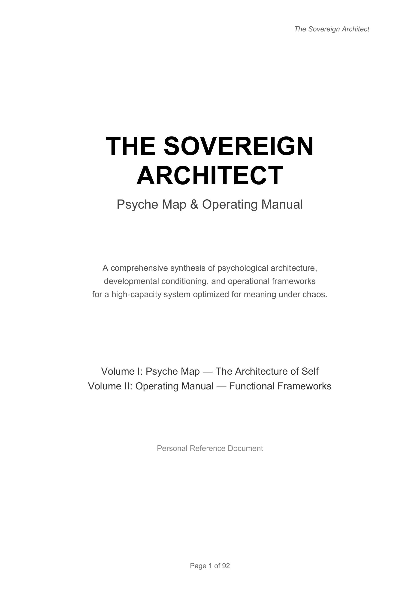

The deeper you get into how it works, the clearer you see the things only you bring.
The capacity to get a machine to do stuff using natural language.
A machine's recursive ability to do those things with better and better precision.
The efficiency gains are real. Right now they are expensive. Regrettably, so are the stakes.
Everything becomes possible at once. The backlog never ends, and choosing becomes the work.
Social adoption will be far more complex and messy than the technical work.
The professionals who carry the work, and the supervisors, managers, and state stewards behind them. Everything here exists to make them better at the job.
Real North Carolina data: the state's own deliverables, the credential registry, the statewide assessment, opioid settlement dollars, and workforce intelligence all in one place.
Technology that synthesizes data like never before. It enhances the abilities of the people who do the work. It does not replace them.
Am I paying others for administrative services today that I may now be able to perform myself?
What information or tools have I wanted to have at my fingertips to manage my responsibilities that I haven't ever been able to access?
How can these tools be integrated with the deeply human work to expand the toolset that leads to recovery, healing, and/or progression?

Here is ninety seconds of it.
Keep going. Come introduce yourself and let's compare notes.
Want to understand it better? The resources slide is a good first week.
Want to go deeper? Anthropic Academy.
academy.claude.com
Behavioral health is the passion. The machinery is the obsession. If we can ever lend a hand, you know where to find us.